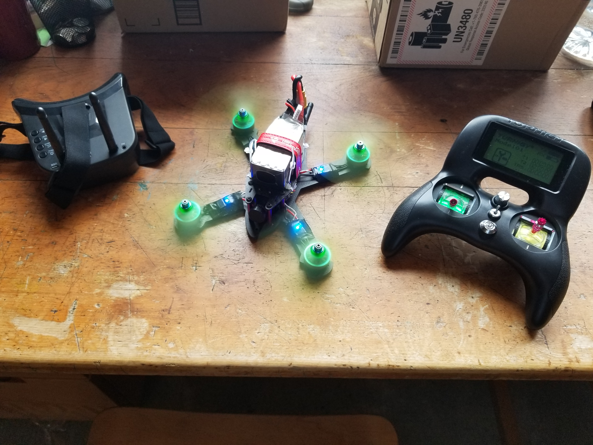

Hello! My name is Adrian Garza and I recently graduated from Massachusetts Institute of Technology with a Bachelor of Science in Mechanical Engineering with a concentration in Control, Instrumentation, and Robotics. Through this concentration, I completed a curriculum that combined mechanical design and control with programming and electronics from the computer science track. I am excited to share some of the projects I’ve worked on with you!
In Bio-Inspired Robotics, I learned how engineers can look to nature for inspiration when creating more efficient robots. Our final project had us test a scientific hypothesis concerning any biomechanical behaviors that could be realized using a robotic system. Below is my team’s poster investigating pumping gait and its effect on skateboard locomotion.
I contributed to the design and assembly of the experimental setup and the 3D printed leg coupling mount and skateboard mount.
The leg mounted on the rail used Cartesian impedance control to set the desired hip height. An ellipse was used for the desired position of the pumping leg which also operated using impedance control. The video below shows SkaterBot in action!
In my Introduction to Robotics class in Spring 2022, the final project was a Mars rover themed competition. Given a robot vehicle equipped with a webcam, we needed to design an end effector to excavate and transport Martian “regolith”. Our robot was semi-autonomous, using feedback from the webcam for navigation and using a keyboard for scooping and depositing the regolith. I worked on the end effector, factoring in how the weight of our materials and the regolith we collected affected the weight distribution on our robot. We used winches to scoop regolith into our collection box so I also had to consider how to position our motors and direct the line to best lift and lower our scoop. Below is a labeled picture of our robot from our final presentation and a video I took during our run in the competition.
My class, Product Design Processes, emulated what engineers would experience in a design team at a modern product development firm. Throughout my spring 2022 semester, my team and I explored the early stages in product development including: opportunity identification; idea generation; customer and market data research; idea selection; devising concepts and creating sketch models; building and testing mockups; embodiment design; and constructing a high-quality functioning alpha prototype. Our team decided on creating a vise that could grip irregular geometries using pouches of granules attached to its jaws. These pouches have the air vacuumed out of them (granular jamming) to harden and retain the object’s shape resulting a firmer grip for oddly shaped work pieces. A labeled CAD and video of our product demonstration can be seen below.
Early on in our product’s development, our team split into various groups to work on the various modules making up the vise. I worked on the conformable pouches, considering materials that would work well in a workshop environment where the pouch might encounter high temperatures and abrasive contact. I also tested how granule materials, size, and shape would affect the pouch’s firmness when gripping objects. Using what we learned from our research, we went through multiple pouch designs before arriving at the one shown in our final product demo above.
In my freshman year, I didn’t have any classes that allowed me to practice what I had learned through projects. I decided to commit to building a racing drone which I had seen many times on YouTube. I also expanded on my build by wiring in a DVR between my onboard camera and flight controller to record flight footage. Through this project I gained a lot of experience with circuit building and electronics which came in handy in many technical classes I took in my undergraduate studies. Below are images of my drone as well as footage of my aerobatic tests in MIT’s soccer fields.
In my Design and Manufacturing class in Spring 2020 I designed and built an autonomous robot to complete various tasks on a game board. The pandemic interrupted our semester and I was only able to continue my project virtually.
Below are the CAD designs for my competition robots. We were allowed to create multiple robots so long as they fit inside of a designated starting box. I chose to create one controlled robot (top) and a semiautonomous one (bottom) each specialized to different competition tasks. The scissor lift on the left robot allowed it to lift a heavy weight and the hook would pull a score multiplier. I performed torque calculations to select a motor gear ratio capable of lifting the weight of the scissor lift and the weight on the competition board. The sheet metal on the front and back of the robot on the right allowed it to push objects of varying sizes around the game board. The prongs at the top would be used to turn a wheel for competition points. I used Solidworks FEA analysis to verify that these components on my robot would withstand the applied forces without deforming.